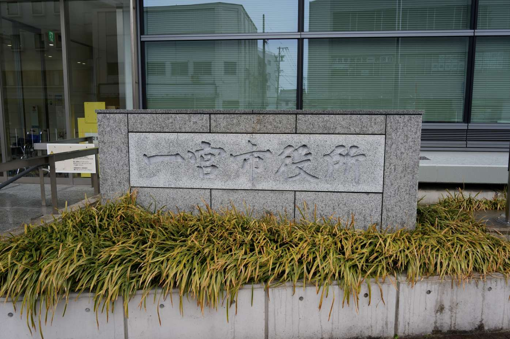
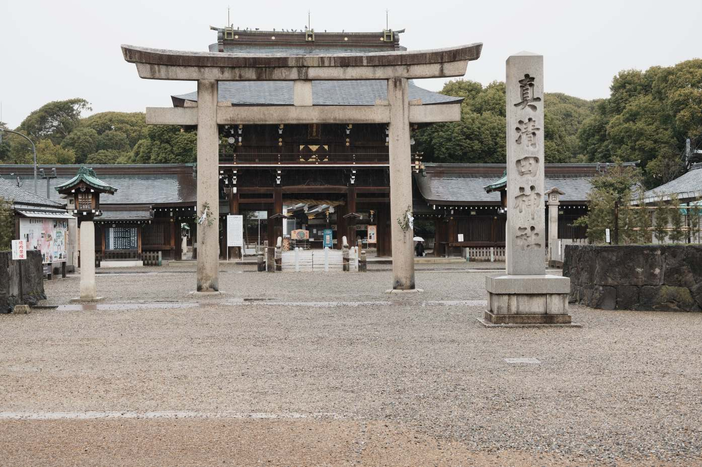
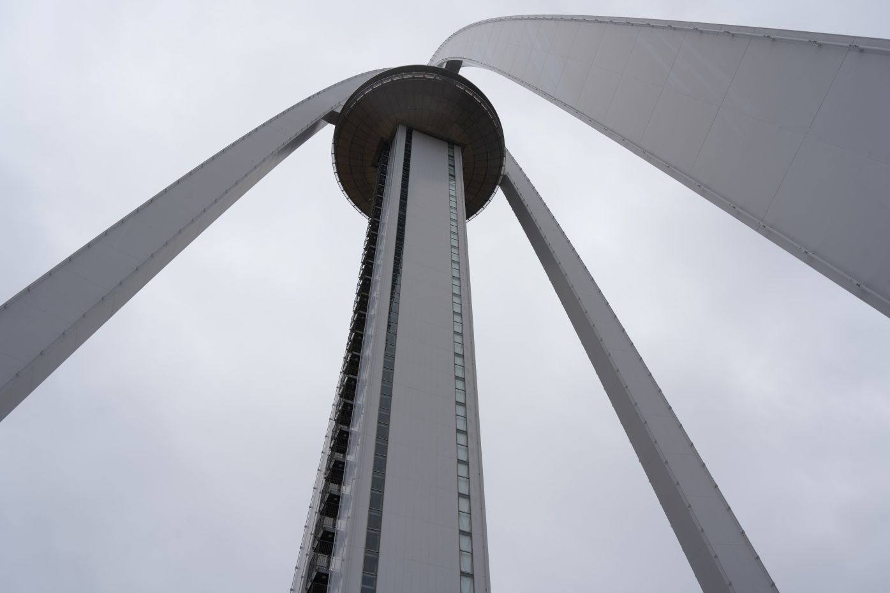

愛知県一宮市
役場

真清田神社

138タワー

一宮市ではモーニングから神社、駅巡りまでかなり楽しめた。138タワーは景色もよく、形が特徴的なので見るだけでも楽しい。神社は駅から近く訪れやすい。他にも木曽川堤やイオンなどを探訪。



一宮市ではモーニングから神社、駅巡りまでかなり楽しめた。138タワーは景色もよく、形が特徴的なので見るだけでも楽しい。神社は駅から近く訪れやすい。他にも木曽川堤やイオンなどを探訪。